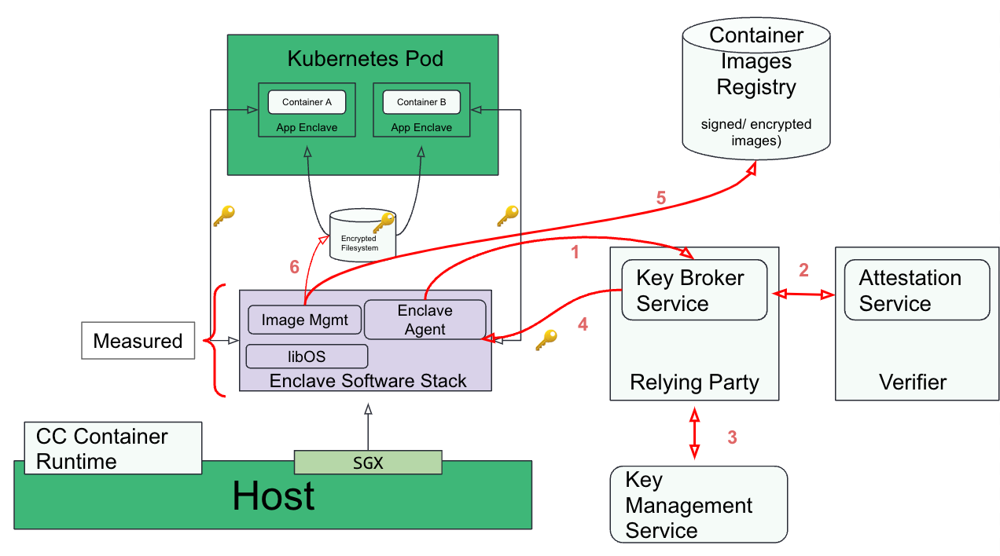

Architecture
Confidential Computing Overview
Confidential Computing protects data in use by performing computation in a hardware-based Trusted Execution Environment. These secure and isolated environments prevent unauthorized access or modification of applications and data while they are in use, thereby increasing the security level of organizations that manage sensitive and regulated data.
A Trusted Execution Environment (TEE) is commonly defined as an environment that provides a level of assurance of data integrity, data confidentiality, and code integrity. A hardware-based TEE uses hardware-backed techniques to provide increased security guarantees for the execution of code and protection of data within that environment.
Key Characteristics of Confidential Computing, as defined by the Confidential Computing Consortium:
Data confidentiality: Unauthorized entities cannot view data while it is in use within the TEE
Data integrity: Unauthorized entities cannot add, remove, or alter data while it is in use within the TEE
Code integrity: Unauthorized entities cannot add, remove, or alter code executing in the TEE
Confidential Computing Building Blocks
Key Components
The following diagram shows how the different building blocks for Confidential Computing (CC) come together:
Let’s start by describing the lower level blocks of the CC solution (colored blue):
Infra layer - be it on-premises (bare metal, VMware etc.) or public clouds (AWS, Azure, GCP, etc.)
Hardware with CC support - this includes 2 distinct models:
VM-based TEEs - In this model, memory is encrypted along a traditional VM boundary running on top of a VMM. AMD SEV-SNP, Intel TDX, IBM Secure Execution and Protected Execution Functionality (PEF) are examples of VM-based TEEs.
Process-based TEEs - In this model, a process that needs to run securely is divided into two components: trusted and untrusted. The trusted component resides in encrypted memory and handles confidential computing, while the untrusted component interfaces with the operating system and propagates I/O from encrypted memory to the rest of the system. Intel SGX is an example of a process-based TEE.
Hypervisor - this includes hypervisors such as QEMU/KVM, cloud hypervisor, public cloud provider hypervisors etc…
The Confidential Computing services block contains a number of services (colored pink) which are required for creating a holistic CC platform which the customer can then use to build their solution. This currently includes the following services:
Attestation service - The primary purpose of the attestation service is to validate the evidence provided by the hardware TEE. This is the Verifier, as defined in the RATS architecture.
Key Broker Service (KBS) - The KBS is the Relying Party, as defined by the RATS architecture. Following are its primary functions:
Receive evidence from the Attester (confidential VM or container) via a challenge-response protocol.
Relay the evidence to the Attestation Service for verification.
Apply appraisal policy for the returned Attestation Results to assess the trustworthiness of the Attester.
Interact with the Key Management Service to retrieve the keys and then send them back to the Attester.
Key management service - A service for securely storing, managing and backing up of cryptographic keys used by applications and users.
Image build service - Services used to build confidential containers or VM images for end users.
Image registry - A service that is used to store encrypted and/or signed container and VM images required for CC workloads. Examples of such registries include Quay.io, Docker Hub, CSPs provided registries, etc.
Both the Confidential VM and the Confidential Containers block contain the Enclave Software Stack. This stack is made of the trusted CC components responsible for collectively running the whole attestation flows, and for example:
Unblocking a confidential VM boot process after injecting a guest owned secret released by the relying party.
Decrypting and unpacking a protected container image, and running its associated workload.
Confidential Container Stack
The CC components can be arranged together and configured to provide containerized workloads with the Confidential Computing security guarantees.
The two following sections describe a generic software architecture for Kubernetes pods to run in either VM-based or process-based TEEs.
Although internal implementations for the two approaches differ, they share the same goals and attributes:
Remove cloud and infrastructure providers from the guest application Trusted Computing Base (TCB).
Integrate natively with the Kubernetes control plane.
Provide an unmodified Kubernetes user and developer experience.
Deploy unmodified workloads.
VM-based TEE
VM-based TEEs (e.g. AMD SEV, IBM SE or Intel TDX) can be used to build a confidential containers software architecture:

Following is the workflow when deploying a Kubernetes pod with VM-based TEEs:
CC workload preparation
User builds the container image(s) (e.g. with tools like
podman).User signs/encrypts the container image(s).
User pushes the container image(s) to the image registry.
Deploying the CC workload in k8s
User deploys the workload (
kubectl apply -f cc_workload.yaml).Kubernetes schedules the workload to target host having the required capability to run confidential containers.
CC workload execution flow (red connector in the diagram)
Confidential containers runtime on the host starts the VM TEE (The enclave).
Enclave (agent) performs remote attestation: steps 1-2 in the diagram.
Enclave (agent) gets the keys required to verify/decrypt the containers image(s): steps 3-4 in the diagram.
Enclave (image management) downloads the container image(s) : step 5 in the diagram.
Enclave verifies/decrypts the container image(s) : step 6 in the diagram.
Enclave starts the container workload.
Process-based TEE
The confidential containers software architecture can also be built on top of process-based TEEs like e.g. Intel SGX:

Following is the workflow when deploying a Kubernetes pod with a process-based TEEs. The main differences from the VM-based TEE approach are the last 3 steps involving interaction between 2 enclave processes:
CC workload preparation
User builds the container image(s) (e.g. with tools like
podman).User signs/encrypts the container image(s).
User pushes the container image(s) to the image registry.
Deploying the CC workload in k8s
User deploys the workload (
kubectl apply -f cc_workload.yaml).Kubernetes schedules the workload to target host having the required capability to run confidential containers.
CC workload execution flow (red connector in the diagram)
Confidential containers runtime on the host starts the enclave agent.
Enclave (agent) performs remote attestation: steps 1-2 in the diagram.
Enclave (agent) gets the keys required to verify/decrypt the containers image(s): steps 3-4 in the diagram.
Enclave (image management) downloads the container image(s) : step 5 in the diagram.
Enclave verifies, decrypts and writes the container image(s) to a local encrypted filesystem: step 6 in the diagram.
The runtime starts the app enclave which reads the container bundle from the encrypted filesystem.
Secure use of the encrypted filesystem is facilitated by a key exchange between the agent and app enclaves using either sealing or local attestation.
As can be seen, the flows for process and VM-based TEEs are almost identical. It
should be noted that process-based TEE requires a few additional software
components like libOS without which the application requires re-architecting.
This is not the case for VM-based TEEs. Conversely, Process based TEEs do not
require a separate VM and CC-aware hypervisor.
The up-to-date design for the Confidential Containers process-based architecture is maintained in the enclave-cc documentation.
CNCF Confidential Containers
The CNCF Confidential Containers project is an implementation of the confidential containers architecture described in the previous section.
It relies on several major cloud native components like containerd, both the
Kata Containers and the enclave-cc runtimes, or the ocicrypt container
image encryption APIs.
It also depends on the standard Linux virtualization stack, including the KVM
hypervisor and open source VMMs like QEMU or cloud-hypervisor.
The project supports both VM-based and process-based TEEs, with the key objective to reuse the generic components around enclave agent and attestation services across both TEE models.
It is a Cloud Native Computing Foundation Sandbox project.
The following diagram shows the upcoming v1 architecture to run Confidential Containers using VM-based TEEs and the Kata Containers runtime:
The following diagram shows the upcoming v1 architecture to run Confidential Containers using VM-based TEEs by leveraging the peer-pods approach. This relies on Kata Containers remote hypervisor support and the cloud-api-adaptor project:
The following diagram shows the upcoming v1 architecture to run Confidential Containers using the Intel SGX process-based TEE. It relies on the enclave-cc project: